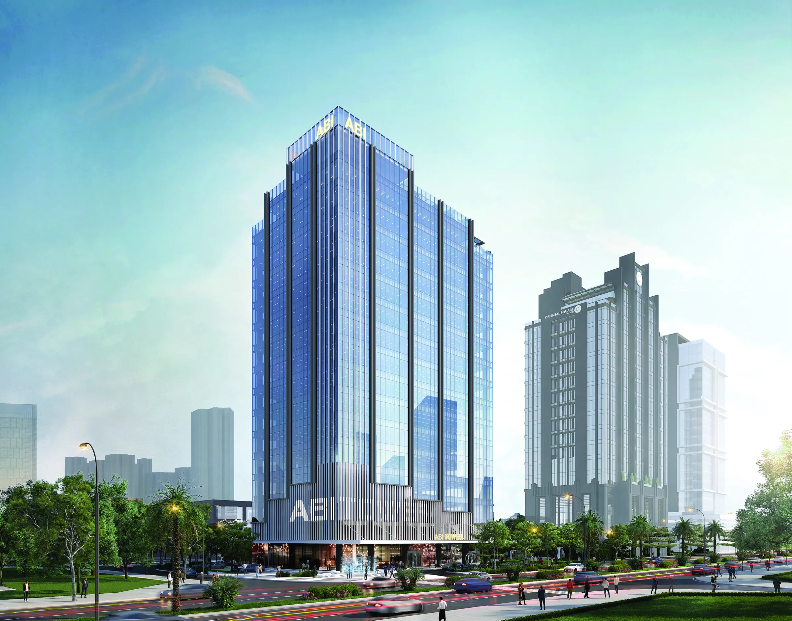
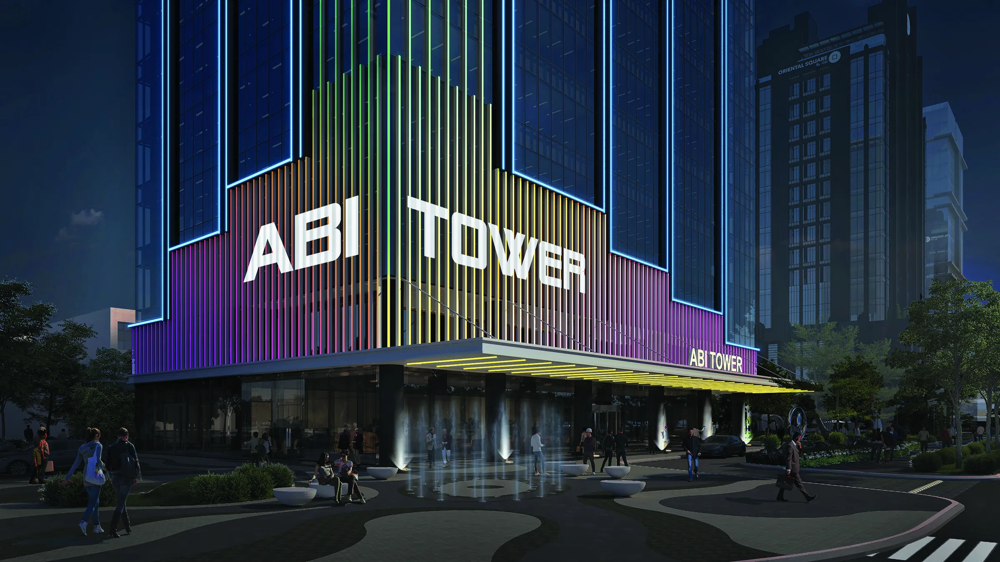
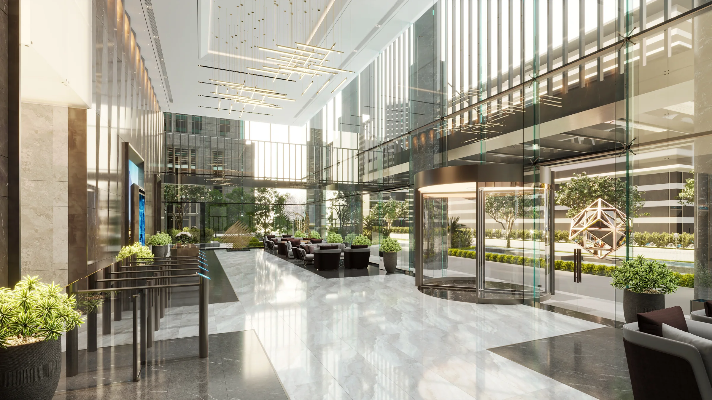

Option ACloud / Aurora
- Tông sáng, hero “innovation hub”: tháp ở giữa nhô lên từ dải đám mây điện toán (outline + lưới chấm)
- Dải băng gradient bao quanh toà tháp + USP lần lượt hiện (The Spiral)
- Stacking plan dạng line isometric — chọn tầng, các tầng trên tách lên, hiện NLA + mặt bằng
- Connectivity map nền be, vành đai xanh, zoom / kéo / hover địa điểm

Option BAmbition
- Tông navy đậm, hình khối vát chéo lấy từ nét chữ “A” của logo, typography lớn
- Viền phát sáng bao quanh toà tháp, callout USP nối bằng leader line
- Stacking plan dạng mặt đứng — mỗi tầng là “ngăn kéo” trượt ra, hiện NLA + mặt bằng
- Map kể chuyện theo cuộn: vẽ vành đai → zoom vào Starlake → hướng Nội Bài

Website nhiều trang · theo Option AMulti-page
- 6 trang theo sitemap: Trang chủ, Về chúng tôi, Thiết kế, Smart Grade A Office, Hệ tiện ích chung, Tin tức & Liên hệ
- Trang chủ dạng tóm tắt, mỗi section dẫn sang trang chi tiết
- Menu con bám theo section, chuyển trang bằng màn gradient brand
- Mục chưa có nội dung để placeholder ghi rõ “chờ nội dung”